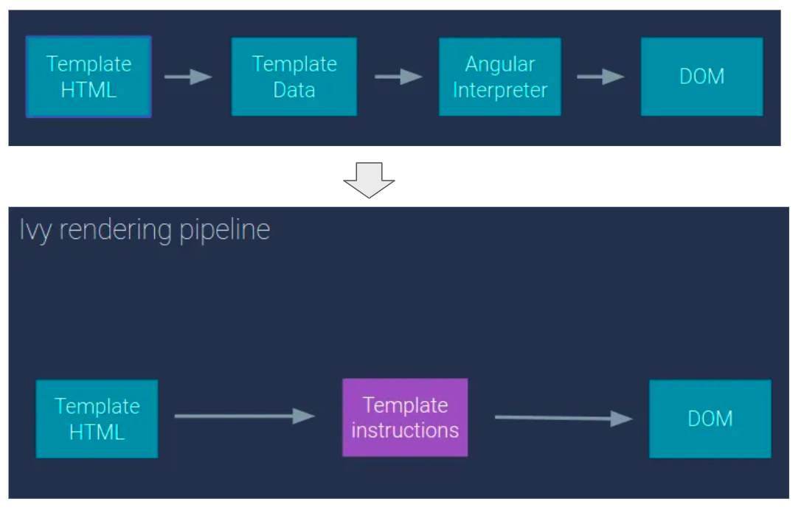

Remove View engine and fully use Ivy (don't need ngcc)
In Angular 9, Ivy was introduced as an optimized next-generation compiliation and rendering pipe-line.
It as set as the default compilier. ngcc is a transformer between the legacy view enginee and the Ivy.
Source: ngConf-2018 keynote

There are two major advantages of Ivy.
Ivy (rendering engine) itself tree shakable but the view enginee is not.
The Incremental DOM from IVY is tree shakable because components won't be interpreted into the templates. Instead, the cmponents refre to instructions, they will not be used if they are not rferred by any instructions.